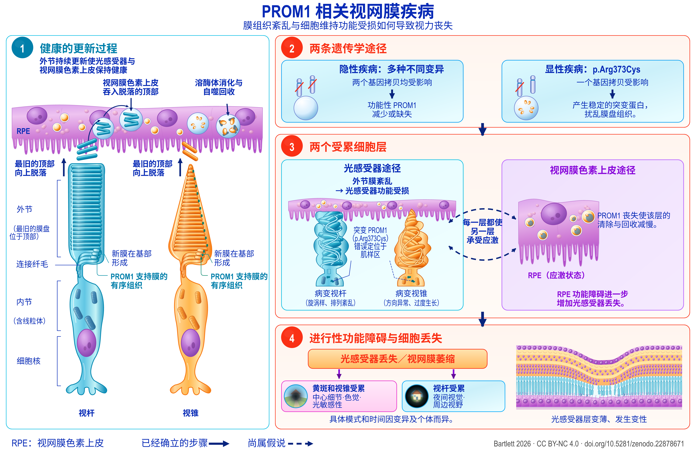

Review
PROM1 相关视网膜变性
基于等位基因差异的机制、干预与研究重点证据图谱
English title: PROM1-associated retinal degeneration
Working paper, version 1.90, 21 September 2026.
The Zenodo record also holds an accessible HTML edition, a spoken-text version, a description of the figure and an audiobook.
Abstract
PROM1 相关视网膜变性包括显性遗传性黄斑病变,以及隐性遗传、通常累及范围更广的光感受器变性。两者不同的遗传模式和临床表现,提出了不同的机制问题与治疗问题。本综述与证据图谱整合了临床遗传学、自然史、膜生物学、光感受器和视网膜色素上皮(RPE)模型、临床前干预,以及注明日期的人体研究记录。最有力的转化进展是在 PROM1 缺陷实验系统中实现了挽救,已在患者来源的类器官和基因敲除小鼠中得到展示。一项已获取全文的小鼠研究及另一项独立的会议摘要均报告了发病后治疗的获益。尚未解决的主要外推问题是显性突变性疾病,其中基因增补、突变体抑制及联合治疗需要直接比较。机制研究并不限于外节形态发生:直接针对 RPE 的实验提示自噬通量及外节清除参与其中,而光敏感敲除模型则涉及内皮素、胰岛素样生长因子1(IGF1)和代谢应激。这些通路需要按细胞区室分别解释。人体定量自发荧光结果限制了将双类视黄醇(bisretinoids)普遍过量作为统一解释的可能;其他视网膜疾病基因型中内皮素的局部保护作用,也不支持将该通路一概视为有害。临床终点也相应分层:显性疾病的萎缩区扩大、隐性疾病的椭圆体带缩短,以及光学相干断层扫描(OCT)所测得的特定层变薄,反映的是不同过程,且具有不同的地板效应。明确列出或采用较宽泛遗传学入组条件的人体研究可能接纳 PROM1 疾病患者,但对其中大多数研究而言,记录说明的是谁可以入组,而非谁实际入组或入组后的结果。本文提出七项实验研究计划,将上述区分转化为可检验的比较,并分别说明具有决定性的对比、解释结果所需的解释保障,以及能够据此解决的决策问题。由此形成的框架按等位基因、细胞区室和疾病阶段区分候选治疗。


Description of the figure
PROM1 相关视网膜疾病。基于当前认识构建的疾病工作模型：外节更新及其受干扰的机制（1、2）、两个受累细胞区室（3），以及随之出现的视觉丧失（4）。虚线表示尚属假说、而非已经确立的环节。各要素的证据见第3至10节。
分图1：健康的更新过程。一个视杆光感受器和一个视锥光感受器并列位于视网膜色素上皮下方。每个细胞由上至下标注为：外节，最旧的膜盘位于顶部；连接纤毛；含有线粒体的内节；以及细胞核。新膜在各外节基部形成，PROM1 支持膜的有序组织；最旧的顶部则向上脱落。视网膜色素上皮吞入这些脱落的顶部，并通过溶酶体消化和自噬回收将其分解。
分图2：两条遗传学途径。左侧为隐性疾病：多种不同变异，两个基因拷贝均受影响，导致功能性 PROM1 减少或缺失。右侧为显性疾病 p.Arg373Cys：一个基因拷贝受影响，由其产生稳定的突变蛋白，扰乱膜盘组织。
分图3：两个受累细胞层。左侧为光感受器途径：外节膜紊乱导致光感受器功能受损。病变视杆画成旋涡样、排列紊乱，病变视锥则方向异常并过度生长；突变 PROM1 p.Arg373Cys 错误定位于肌样区。右侧为视网膜色素上皮途径：PROM1 丧失使这一层的清除与回收减慢，图中显示其处于应激状态，RPE 功能障碍进一步增加光感受器丢失。两个框之间有弯曲虚线箭头，标注“每一层都使另一层承受应激”；虚线表示该关系尚属假说，而非已经确立。
分图4：进行性功能障碍与细胞丢失。随后出现光感受器丢失和视网膜萎缩，分为两条后果：黄斑和视锥受累，影响中心细节、色觉和光敏感性；视杆受累，影响夜间视觉和周边视野。具体模式和时间因变异及个体而异。旁边的横断面显示光感受器层变薄、发生变性。
图例。实线箭头表示已经确立的步骤；虚线及虚线箭头表示尚属假说的内容。
Download the figure (PNG, 5400 × 3600 pixels, CC BY-NC 4.0)
How to cite
Bartlett C. PROM1 相关视网膜变性：基于等位基因差异的机制、干预与研究重点证据图谱. Version 1.90. Zenodo, 21 September 2026. https://doi.org/10.5281/zenodo.22878671